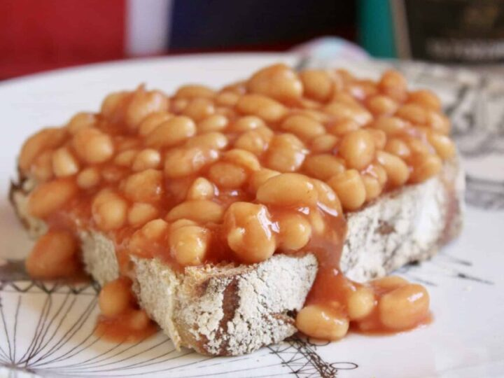

Toast and Beans

Buttered toast with beans
Its beans on toast, its not too complicated.
Ingredients
- Bread
- Butter
- Beans
- Pepper
Instructions:...
- Slice bread, and begin toasting
- Heat beans up in a saucepan
- Butter toasted bread
- Top with beans and cracked pepper